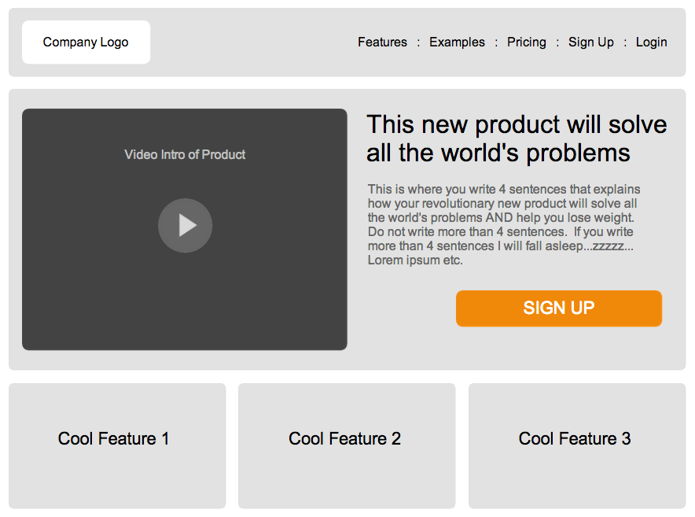
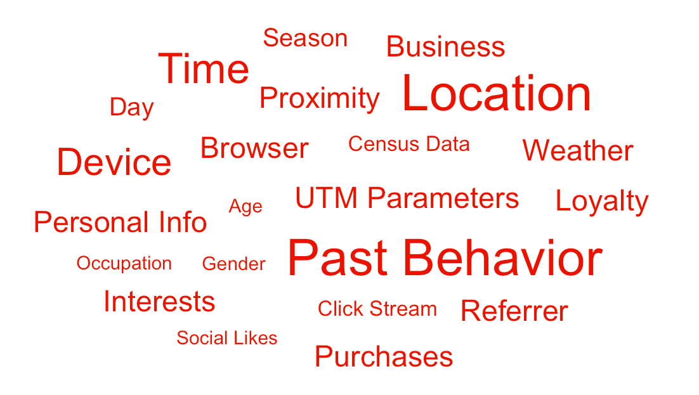
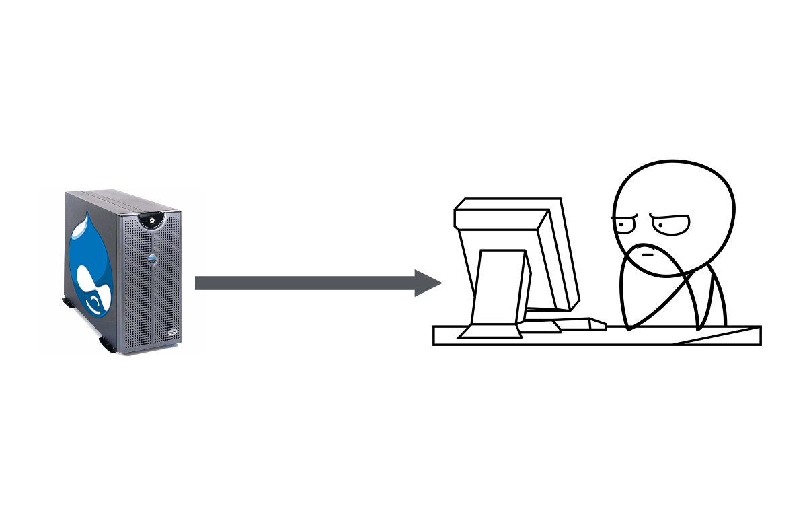
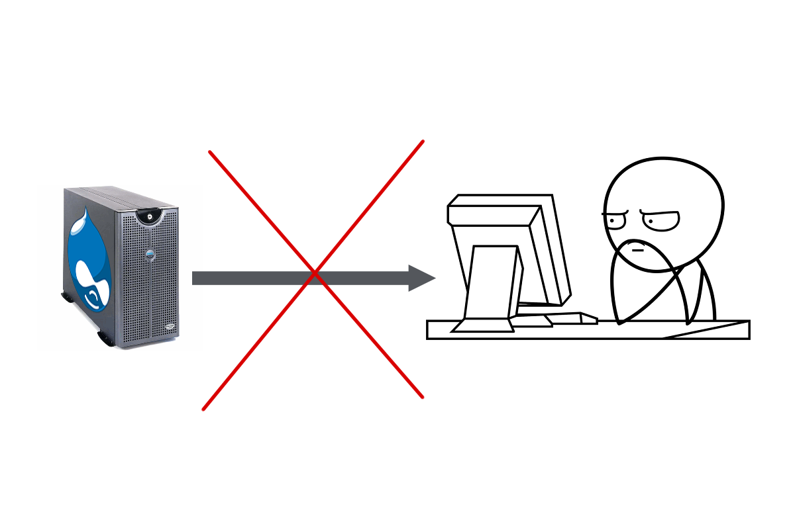
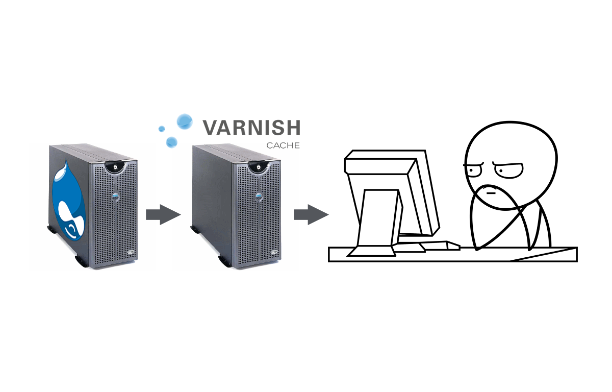
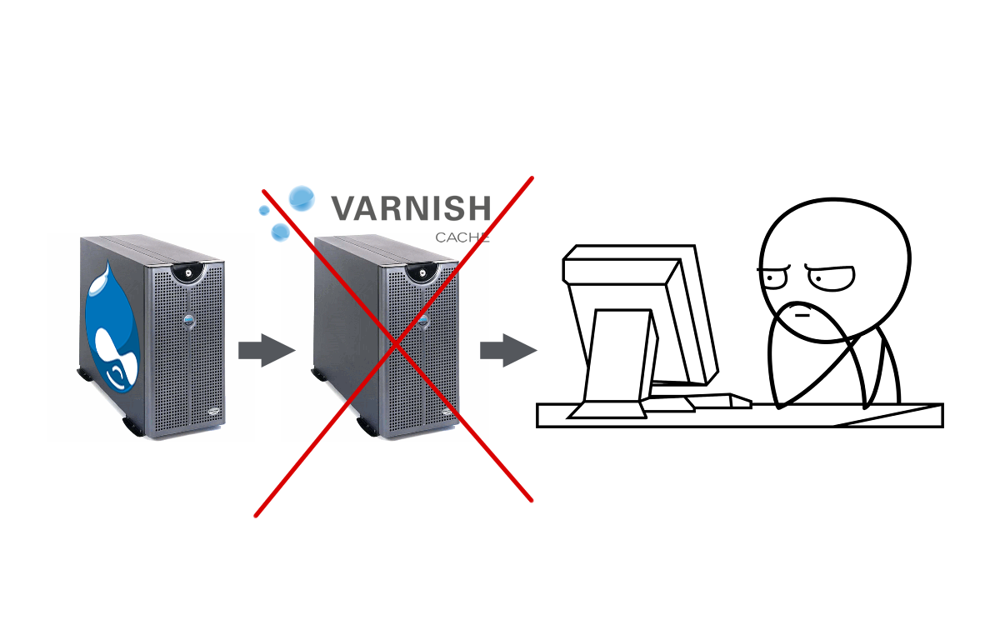
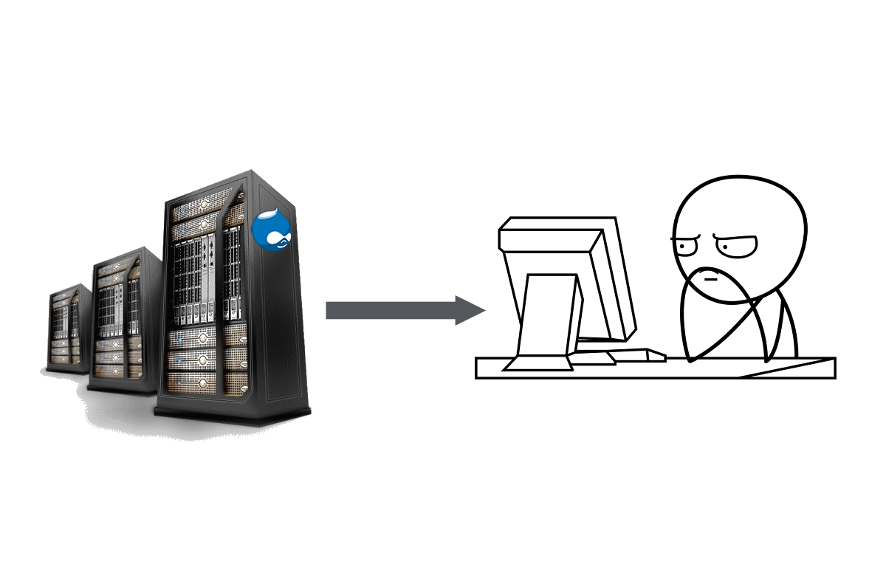
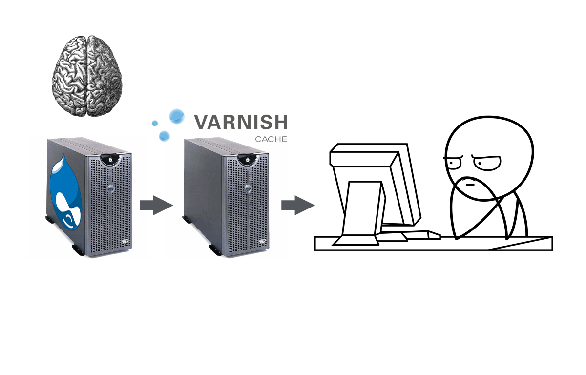
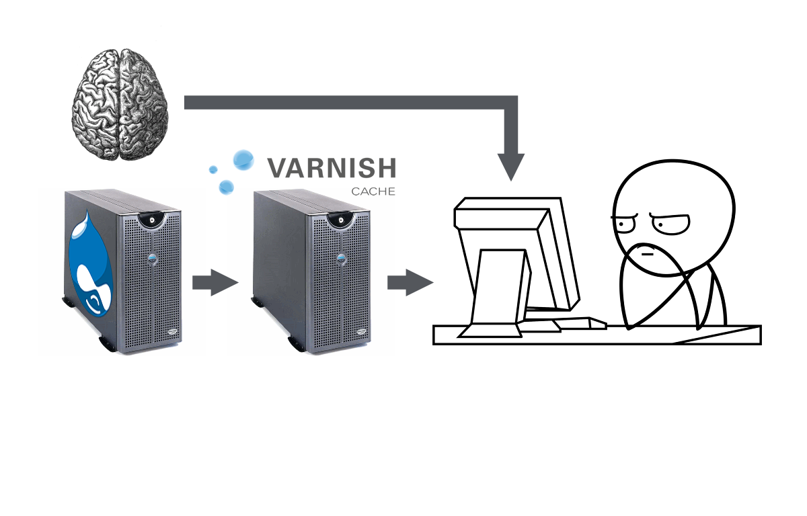

Extending Personalization
with personalize.module plug-ins.
Presented by Kat Bailey / @katherinebailey
and
Presented by Dave Ingram / @daveaingram
Look around you

Visitor Context

What now!?
Personalize!
Say wah?
Many different kinds of personalization:
- Testing (A/B, MVT, MAB, etc..)
- Content recommendations
- Rules based targeting
- Magic
Smart Websites:
Content based on context







Super quick demo time!
Components of the personalization framework
Agents

Option Sets
- Different values in a multi-value field
- Different blocks
- Different blobs of html to replace the contents of some selector
- Different panel panes?
Executors

How can you extend this?
Agent type plugins
An agent, or decision agent, is the thing that makes the decision about which piece of content to show
Agent type plugins
- A/B Testing
- Explicit Targeting
- Machine Learning (e.g. Google Content Experiments?)
- Content Recommendation
- Etc...
Writing an Agent Type plugin
- Some PHP code (ctools plugin glue code plus a class implementing a particular interface) for configuring the behavior of the agent.
- Some JS code that responds to a request for a decision and provides the decison as to what to show.
Agent Type plugin examples
- Personalize Target
- Acquia Lift
Visitor Context Plugins
These give access to things we can know about the visitor, e.g. user profile information, querystring parameters.
Writing a Visitor Context plugin
- Some PHP code (ctools plugin glue code plus a class implementing a particular interface) that plugs into personalize module's configuration of visitor contexts.
- Some JS code that passes the actual values of these contexts at runtime to the personalization mechanism.
Visitor Context plugin examples
- User Profile context (in personalize module)
- Personalize URL Context submodule (for targeting based on querystring parameters).
Option Set Type Plugins
These allow personalization of different types of Drupal content.
Writing an Option Set plugin
- Uses ctools plugins but no class required - it just needs to hook in to the rendering of whatever it's personalizing
- No JS required! :D
Option Set plugin examples
- Personalize Fields submodule
- Personalize Blocks submodule
- Personalize Elements submodule
Executors
Provide different ways of responding to a decision and depend on how the Option Set is rendered.
- Default ("show") executor: assumes all options are rendered on the page, pulls out the chosen one for display.
- AJAX ("callback") executor: no options rendered on page load, makes ajax request for the chosen content.
Writing an executor
Purely JavaScript - see Drupal.personalize.executors.show and Drupal.personalize.executors.callback in personalize.js
Goals (Visitor Actions)

Goals/Actions are extensible too!
- Can be defined in code by implementing a hook
- Can be defined via the Rules UI
- You can write an Actionable Element plugin for allowing other types of things (besides links, forms and the entire page) to be actionable via the Visitor Actions UI module